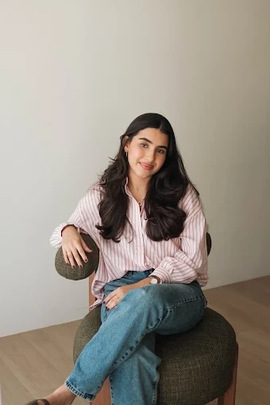
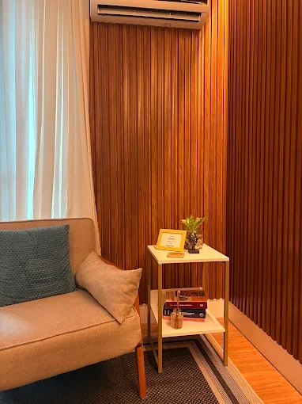

01
Terapia Cognitivo-Comportamental
A TCC considera as relações entre pensamentos, emoções e comportamentos.
PSICOLOGIA CLÍNICA · ARACAJU, SE
Um espaço de acolhimento e transformação. Psicoterapia presencial em Aracaju e online, com Brena Maria.
Atendimentos somente com hora marcada.

Um pouquinho além da psicologia.
01 / SOBRE MIM
Psicóloga clínica, formada pela Universidade Federal de Sergipe (UFS). CRP 19/6169.
Ao longo da graduação, amei experimentar diferentes áreas, mas a minha paixão sempre foi a clínica e não poderia ser mais realizada.
Hoje me guio pela Terapia do Esquema e pela Terapia Cognitivo-Comportamental, abordagens pelas quais me encanto cada dia mais e que me permitem ter um olhar e escuta cuidadosos.
Trabalho com a ideia de que o que foi construído para sobreviver pode ser reconstruído para viver, permitindo que cada paciente encontre o movimento necessário para uma vida com mais sentido.
02 / ABORDAGENS
Conheça as abordagens que orientam minha prática clínica.
A TCC considera as relações entre pensamentos, emoções e comportamentos.
Abordagem que explora padrões emocionais, cognitivos e relacionais que podem se repetir ao longo da vida.
Cada processo terapêutico é singular.
03 / ATENDIMENTOS
Atendimentos presenciais em Aracaju e online, com hora marcada.
Psicoterapia na modalidade online, mediante agendamento.
Em Aracaju, SE, no Neo Office — Jardins. Consulte disponibilidade pelo WhatsApp.

ATENDIMENTO PRESENCIAL
Conheça um pouco do ambiente onde acontecem os atendimentos presenciais em Aracaju.
Neo Office — Jardins
Aracaju, Sergipe
04 / PERGUNTAS FREQUENTES
Para dúvidas específicas sobre horários, valores e disponibilidade, fale diretamente com a profissional.
Os atendimentos acontecem online e presencialmente em Aracaju, SE.
Os atendimentos presenciais acontecem no Neo Office — Jardins, em Aracaju. Confirme o endereço completo ao agendar.
Terapia Cognitivo-Comportamental e Terapia do Esquema.
Entre em contato pelo WhatsApp para consultar as condições e a disponibilidade de horários.
05 / CONTATO
Atendimento com hora marcada. Envie uma mensagem para saber mais.
Falar pelo WhatsApp